How a flat homepage became one full day drawn as an ink-on-paper island — told through every prompt that asked for it, every design question that shaped it, the paths not taken, and the bugs the build caught on the way.
I want to completely redesign this. Explore options to make this interactive, engaging. Ask questions to clarify requirement. Use full imagination and be as creative as possible. Research the web for ideas if you want.
Light fix: “clarify requirements”.
“This” could have meant the homepage, the README or the whole repo. So the work began with a read of everything the hub linked to — 16 pages, the README and the old homepage’s 3,719 lines — and a first round of design questions instead of a design.
Working agreement for the whole session: plan first, ask before assuming. Every fork in this deck was a question put to the owner, with a recommendation and the option to type something else.
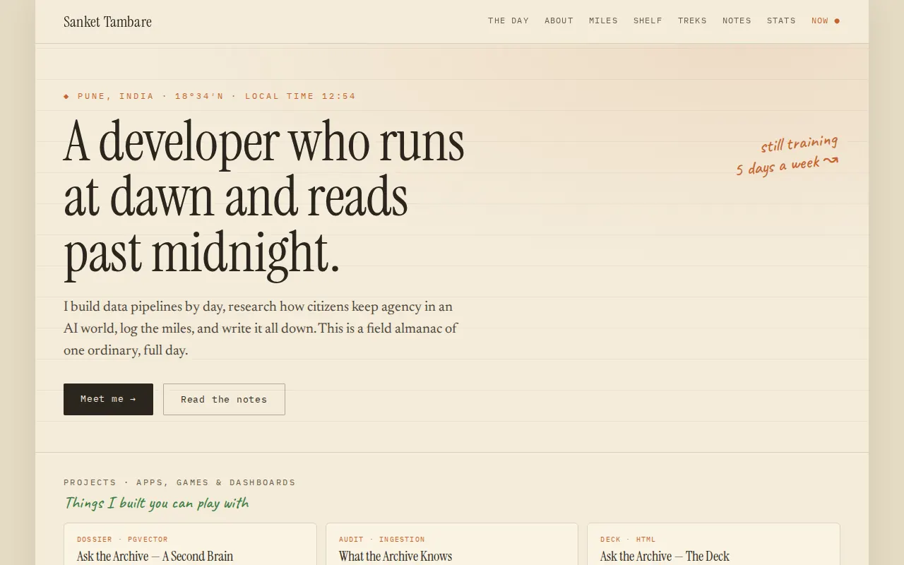
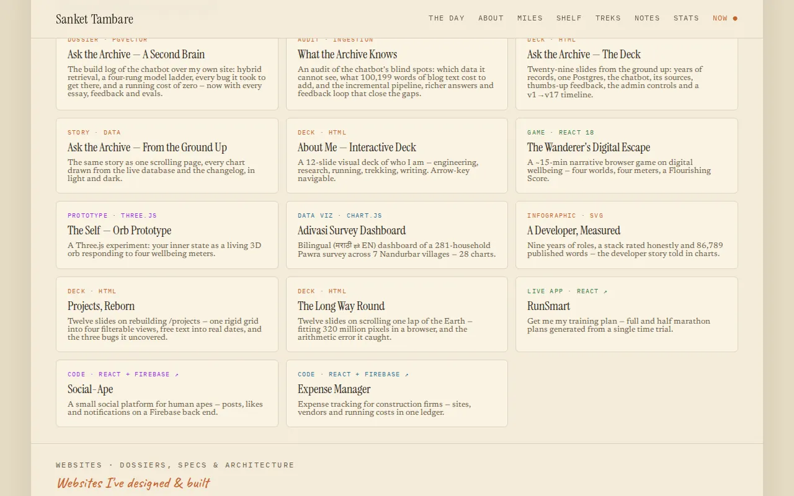
go(view) router — no URLs, so no deep links, and Back always went home<h1>s, no landmarks, nav items that were <span>sstyle=""s<div>sThe answers pushed every dial to the top: the whole site, any look, a show-stopper, and one journey instead of eight rooms.
What should the redesign cover? (“this” could mean a few things in this repo)
How far from the current “Field Almanac” look (warm paper, serif, rust accent) should it go?
How ambitious should the interactivity be?
What should happen to the in-page content views (About, Miles, Shelf, Treks, Notes, Now, Stats)?
Reading the repo turned up docs/personal-website-redesign.html: sankettambare.in already runs “The Wanderer’s Atlas” — a globe you dive into, an illustrated map of regions, quests and a passport.
One request was declined along the way: fetching the live site for book and race lists. Everything on the island comes from data already in this repo.
What are the possible options to convert this in 3d designed world? Give it rich, professional look.
Light fix: “convert this into a 3D-designed world? Give it a rich, professional look.”
Six worlds went on the table — each a different answer to “what is a personal site, spatially?” — every one with the same promise: a real typographic layer on top, deep links, and a plain classic page as the fallback.
A floating diorama that runs one full day; drag the clock from 05:30 to 00:30.
☀ 05:30 ━━━●━━━━━ 00:30 ☾
▲ fort
┌───/^\─── tower ──┐
│ ~~river~~ run │
└─[studio]─────────┘Scroll climbs a Sahyadri trail; campsites are projects, the summit fort is contact.
▲ SUMMIT
⛺ camp 2 ./
⛺ camp 1 ../
🏠 base ▁▂▃▅▇ elevationProjects as constellations, books as a nebula, races as comets.
✦ · ✧ · ✦
✦──✦ Ask the Archive
☄ races ░nebula░
▁▂▃▅▇▆▄ SahyadriA cabin room: the monitor runs the decks, a shelf of pullable books, a medal wall.
A 42.195 km course: km boards are chapters, aid stations are projects.
A walkable avatar with physics, Bruno-Simon style.
Round 2 · the world
Which 3D world should the site become?
How should visitors move through the world?
Which art direction gives the “rich, professional” look you want?
Where should the 3D assets come from?
Round 3 · the rest of the site
“Whole site”: how far should the island look reach into the sub-pages?
What should happen to the GitHub profile README?
Which extra layers should the island have? (pick any)
Use it from blender
Light fix: “Use it from Blender” — i.e. build the island’s assets in Blender.
pip install bpy==4.5.14 (4.5 LTS) — Blender, headless, in the containerstop_run, cam_build, hot_read_* — so a GUI edit re-exports without touching JSRound 4 · Blender
“Use it from Blender” — who should build the island in Blender?
Where should Blender’s rendering be used, beyond the models? (pick any)
Round 5 · the numbers disagreed, so the owner decided
The book count disagrees across the repo. Which is canonical?
Java and C skill ratings disagree. Which is right?
No preference → went with ★★★
Where should the four Ask the Archive cards live on the island?
Should the Blender source file (island.blend, likely 5–20 MB compressed) be committed?
What are the options for blender, as it is heavy
Light fix: “What are the options for Blender, as it’s heavy?”
| Option | Visitor download | Repo | Tooling |
|---|---|---|---|
| A · full Blender | ~1.5 MB | 15–30 MB | 1.2 GB install · ~40 min bake |
| B · Blender-lite | ~1 MB | 2–3 MB | 1.2 GB install · ~3 min |
| C · in the browser | ~0.1 MB | ~1.5 MB | none |
| D · browser, Blender-ready | ~0.1 MB | ~1.5 MB | none now |
Given the weight, which way should the 3D island be built?
Suggest other options for 3D
Suggest other options for 3D
No fix needed. Instead of picking a weight, the answer reopened the menu — Zdog, CC0 kits, real terrain, a scroll film.
Round 7 · beyond Blender
What should the island’s ground be?
Where should buildings and props come from? (pick any)
Add photoreal “memories” — 3D scans captured on a phone?
Round 8 · the conflict: Zdog draws its own shapes and can’t load GLB models
Zdog can’t load the CC0 model files. How should the props be made?
What should the island’s ground look like?
Day Island · a guided camera · topographic ink · three.js 0.186 from jsDelivr through an importmap · free Kenney models plus code. The page is readable before a single module loads.
core · registry · router · ui · cmdk · notes — IST clock, deep links, ⌘K. No CDN needed.main3d → scene → terrain · props · materials · post · palette · railprops.glb.gz 145 KB · runner.glb.gz 28 KB — meshopt + gzip, inflated with DecompressionStream1834 for 18°34′N — with a warped coast, a carved river, bays and flat pads for buildingsExtrudeGeometry terrace; tops and walls merge into two meshes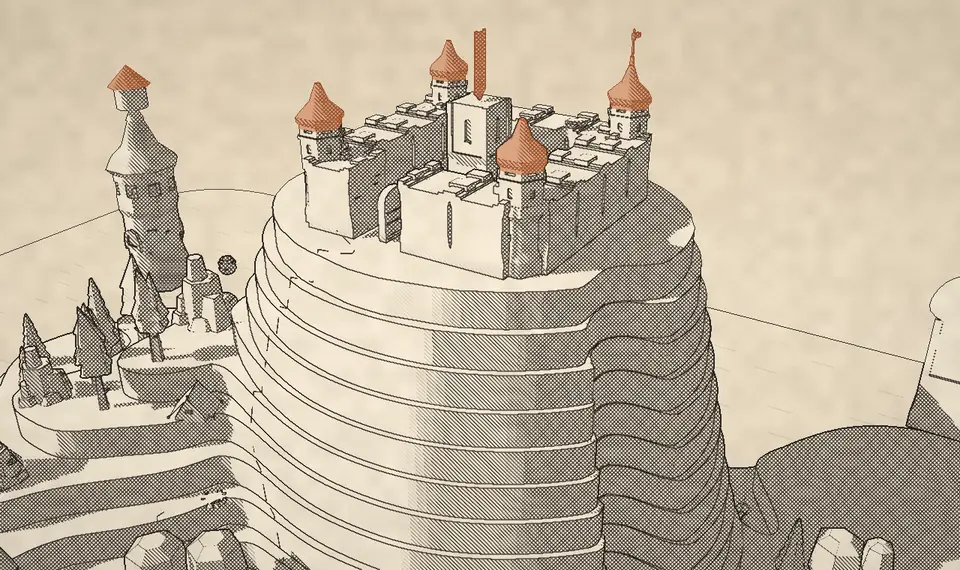
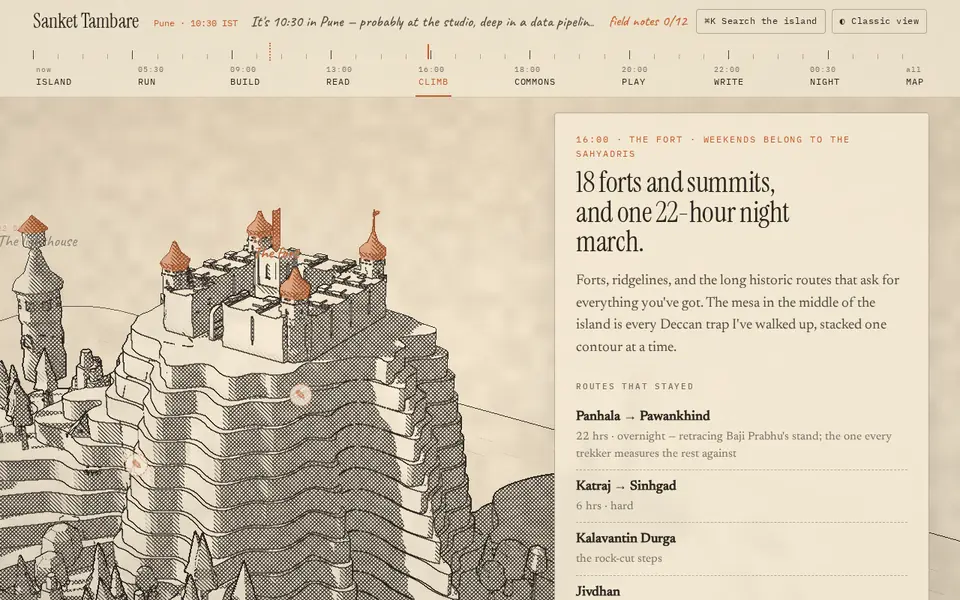
| Channel | Meaning |
|---|---|
| R · tone | 0 = sunlit paper … 1 = deep shade (drives the hatching) |
| G · ink | extra line work: strata, isobaths, ripples, trails |
| B · accent | 0–0.5 rust; 0.5–1 glow (lit windows, lamps) |
| A · class | sky · water · land · props · lines |
// composite pass: hatch by tone, at CSS-pixel pitch
float h1 = hatchLine(vec2(cp.x + cp.y + wob, 0.0), 5.2, 0.9) * smoothstep(0.30, 0.40, tone);
float h2 = hatchLine(vec2(cp.x - cp.y + wob, 0.0), 5.2, 0.9) * smoothstep(0.52, 0.62, tone);
float h3 = hatchLine(vec2(cp.y + wob * 0.5, 0.0), 3.4, 0.8) * smoothstep(0.74, 0.84, tone);
tools/props/kits.json pins 9 CC0 kits (castle, nature, watercraft, city, pirate, survival, fantasy town, mini characters) by URL and sha256build-props.mjs flattens 57 prototypes, samples each kit’s colormap under every vertex into COLOR_0, then drops the textures — so mixed kits read as one ink drawingsprint and idle clips — 28 KB — and only comes out at dawnA single uHour drives the palette keys, the sun and moon, and a shadow map that sweeps as you scroll. After dusk, windows light up one by one, lanterns glow, stars twinkle and the lighthouse beam turns.
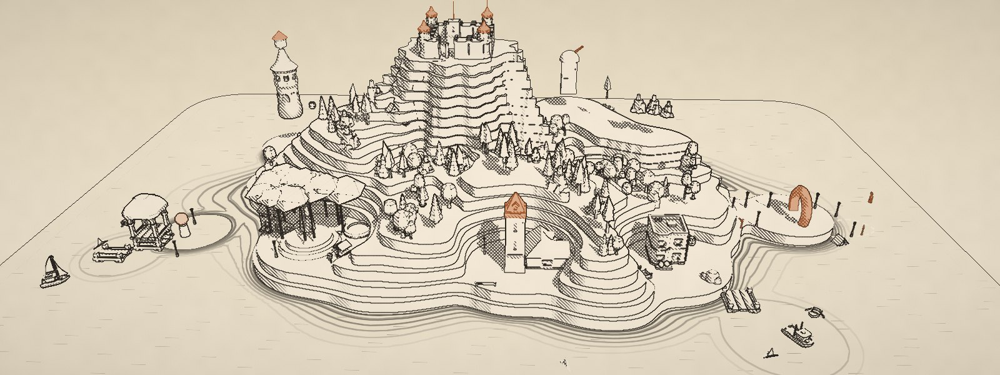
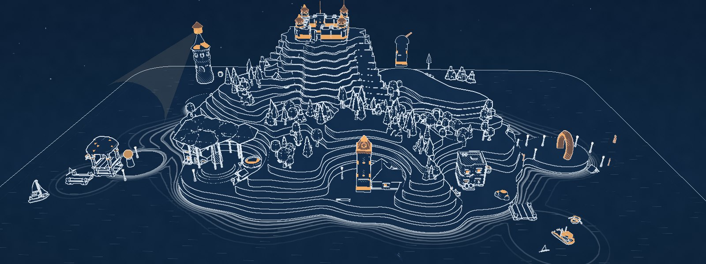
focus = scrollY + vh × 0.5 // 0.66 on phones inside a panel → u = k, hour = in → out inside a spacer → u = k + ease(f), hour = out → next in
setViewOffset keeps the subject clear of the panel; phones get bottom sheets<article id="stop/slug"> in #map; registry.js moves it to its stop, lists it in its band and indexes it — adding content is one article#read/ask-the-archive land on the card with a “you were here ↩”; Back and Forward fly the camera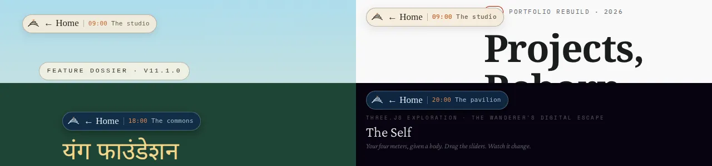
<a data-island-return href="…#stop/slug">← Home</a> — it works without JSchrome.js draws one consistent chip in its place, inside a shadow root, so decks keep their own CSS and arrow keys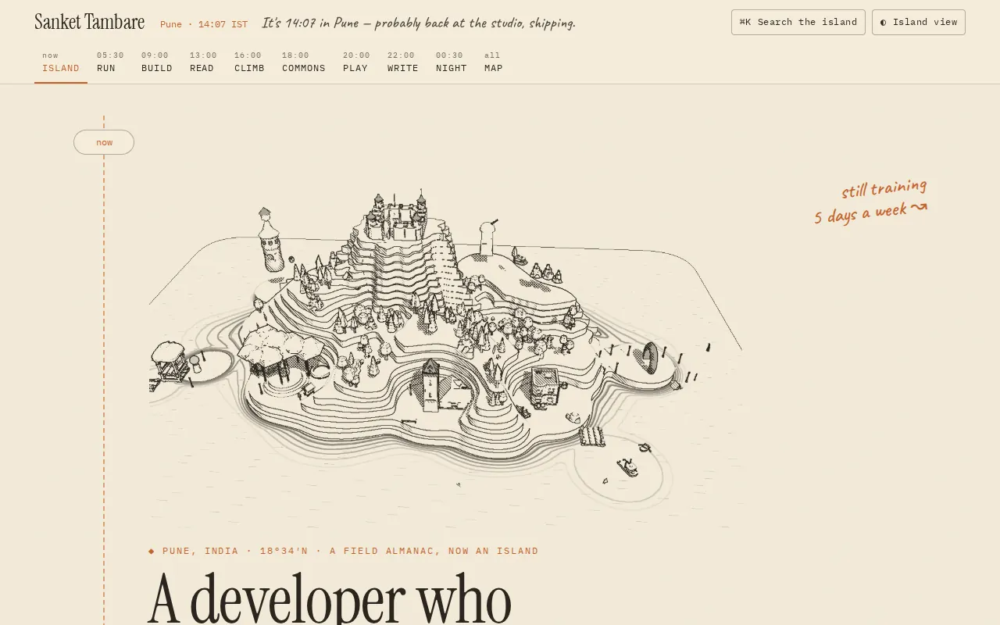
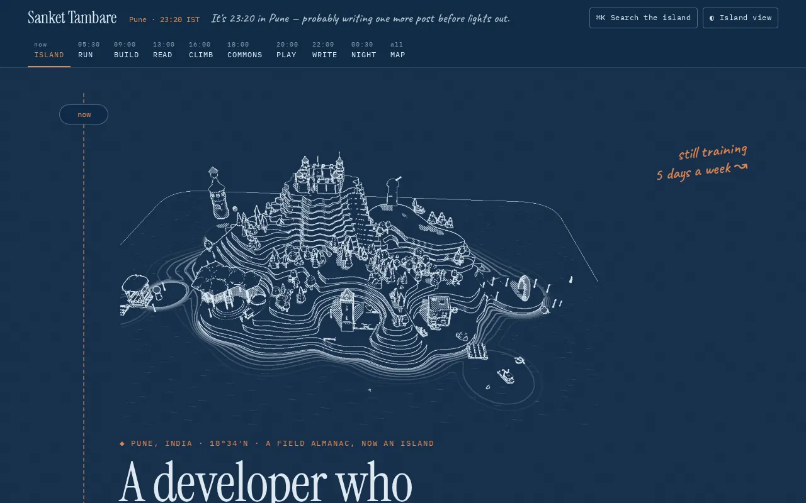
prefers-reduced-motion, Save-Data or ?classic → the classic day timeline, with Blender-free ink stills captured from the island and recoloured by CSS masks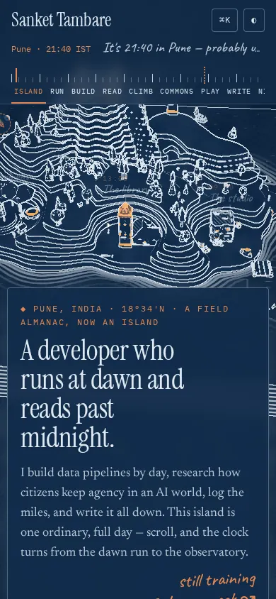
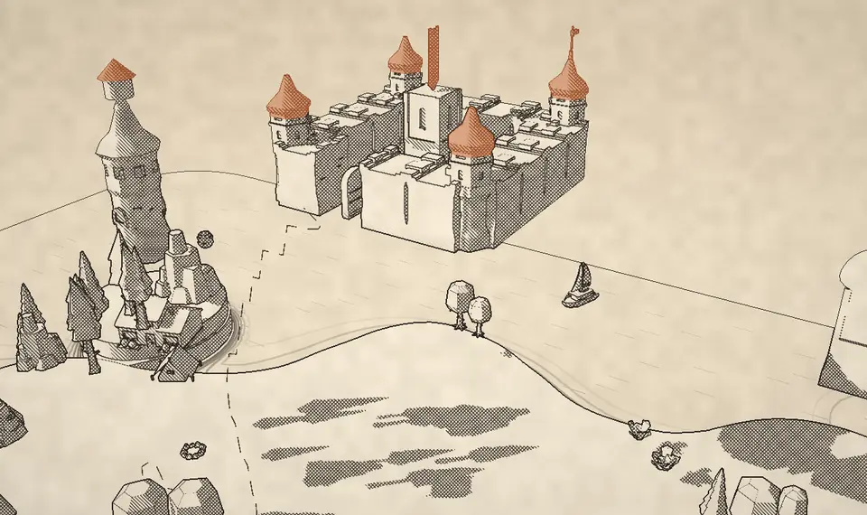
Only 2 of 15 terrace levels drew: merging the levels gave each one its own material slot, and only two materials existed.
Fix: merge tops and walls into two meshes.
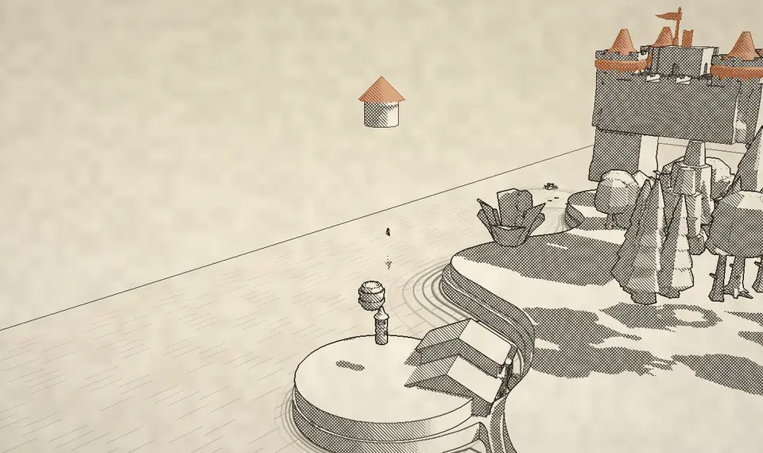
Quantized models keep their scale on the node, not the mesh; placing only the geometry shrank a 10-unit tower to a stub.
Fix: carry each prototype’s node matrix into its instances.
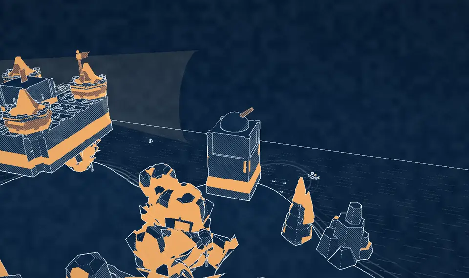
“Blue-ish means glass” also caught green leaves and blue-grey stone, so whole forests glowed like windows at night.
Fix: glass is g−r > 0.08 and b−g > 0.05 — Kenney’s real glass swatches.
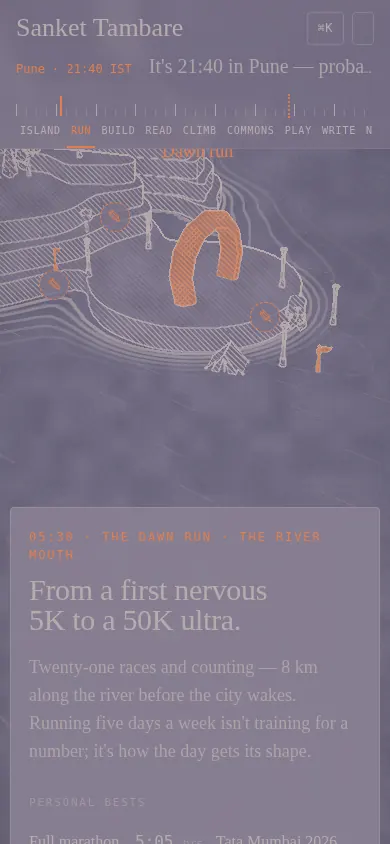
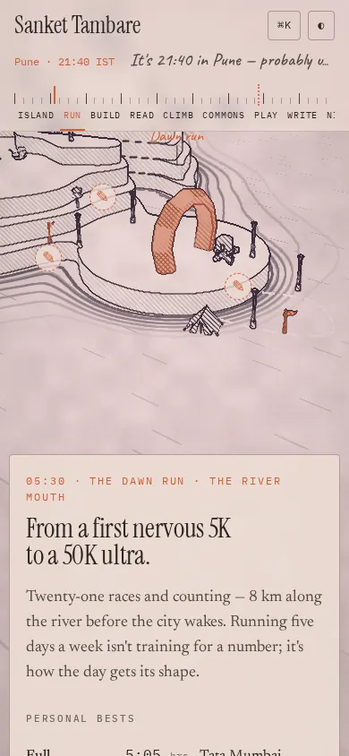
Paper and ink swap brightness at dawn and dusk — and the swap landed right on the 05:30 and 18:00 stops.
Fix: swaps moved into the spacers, plus a contrast guard for panels.
getComputedStyle resolves all four offsets; copying both left and right squeezed the Home chip to 84 px.
Fix: keep only the corner the original is anchored to.
A 0.4 s panel colour transition let pale night ink land on a still-light panel mid-flight (found while making this deck). Headless Chrome also couldn’t trust the sandbox’s TLS proxy.
Fix: no colour transition; QA answers the CDN from pinned local packages.
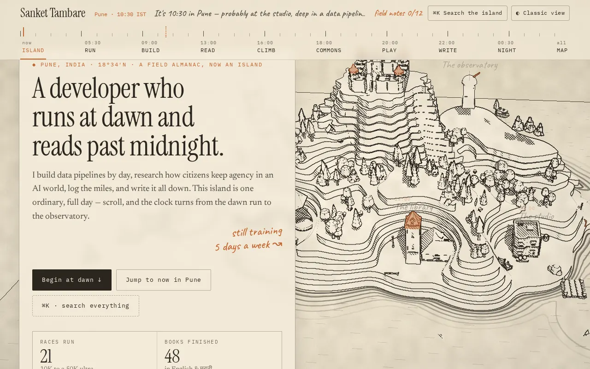
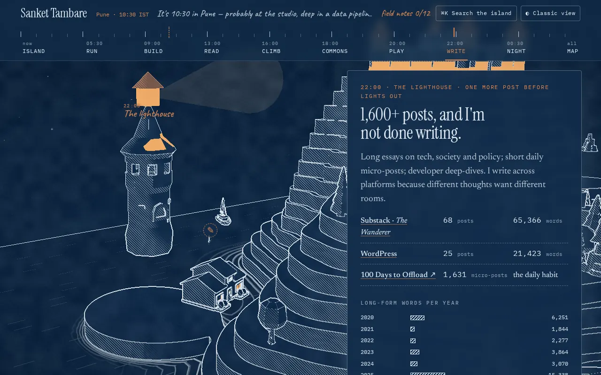
Directly commit of all these changes to main and push as well. I want to create a presentation about this re-design efforts and the detailed Redesign Ass this as static Html Slides, add under presentations, and list on homepage. Use illo-skill for drawing illustrations.. Ask questions to clarify requirement. For the presentation, include provided prompts in the slides.
Light fix: “Directly commit all these changes…”, “this redesign effort”, “Add this as static HTML slides”, “use the illo skill”, “clarify requirements”, “include the provided prompts”.
… For the presentation, include provided prompts, design questions in the slides.
Light fix: “include the provided prompts and design questions”. The rest repeats prompt 06.
Round 9 · this deck
The illo skill isn’t installed in this session. How should the illustrations be drawn?
How deep should the deck go?
What should the deck include besides your prompts and the illustrations? (pick any)
How should your prompts appear on the slides?
The illo skill wasn’t available in this session, so every drawing here follows its house style by hand — Blot, warm paper, a 4 px ink line, one teal and one orange accent — as in the Ask the Archive deck.
continue, now also add instructions in claude.md that whenever such presentation/ doc/ project is added, entry should be added on homepage. readme and claude.md
Light fix: “Continue. Now also add instructions in CLAUDE.md that whenever a presentation, doc or project is added, an entry should be added on the homepage, README and CLAUDE.md.”
Whenever a presentation, doc, dashboard, game, prototype or project is added, renamed, moved or removed, update all three in the same commit:
#map, in the right bandThe task isn’t done until all three are updated. node tools/qa.mjs already fails if a page is missing from the homepage.
This deck is the rule’s first customer: the card build/day-island-deck, a Day Island row in the README’s Websites table, and its entries in the tree.
I want to completely redesign this. Explore options to make this interactive, engaging. Ask questions to clarify requirement. Use full imagination and be as creative as possible. Research the web for ideas if you want.
What are the possible options to convert this in 3d designed world? Give it rich, professional look.
Use it from blender
What are the options for blender, as it is heavy
Suggest other options for 3D
Directly commit of all these changes to main and push as well. I want to create a presentation about this re-design efforts and the detailed Redesign Ass this as static Html Slides, add under presentations, and list on homepage. Use illo-skill for drawing illustrations.. Ask questions to clarify requirement. For the presentation, include provided prompts in the slides.
I want to create a presentation about this re-design efforts and the detailed Redesign Ass this as static Html Slides, add under presentations, and list on homepage. Use illo-skill for drawing illustrations.. Ask questions to clarify requirement. For the presentation, include provided prompts, design questions in the slides.
continue, now also add instructions in claude.md that whenever such presentation/ doc/ project is added, entry should be added on homepage. readme and claude.md